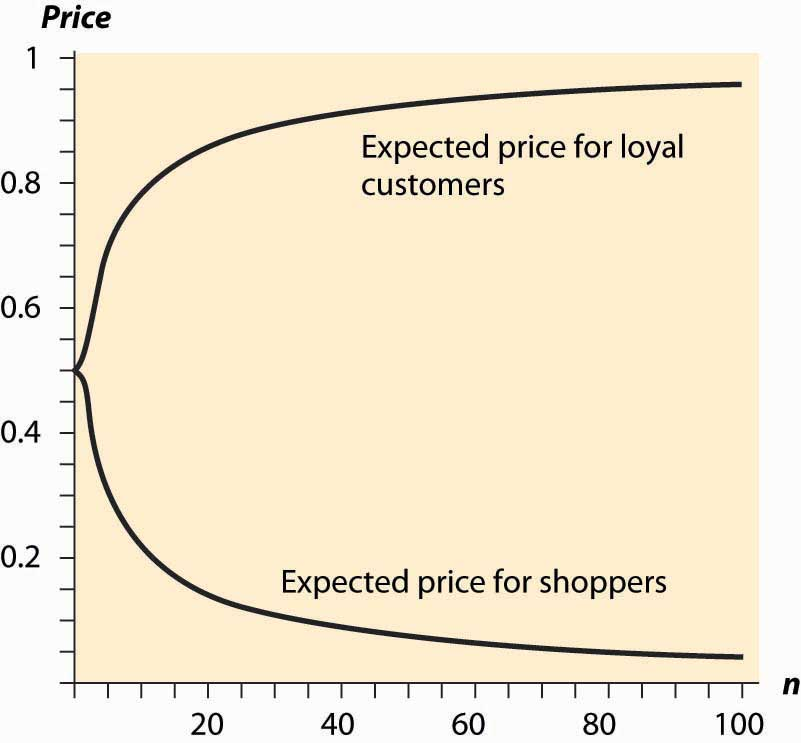
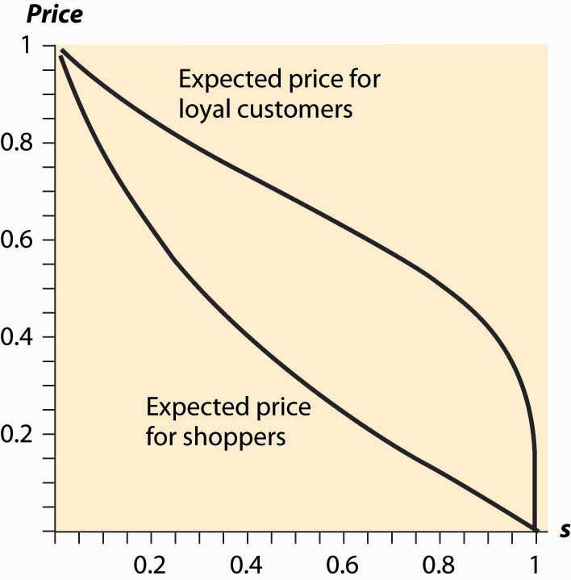

Decades ago, economists used to make a big deal about the law of one priceIdentical goods sell at the same price., which states that identical goods sell at the same price. The argument in favor of the law of one price is theoretical. Well-informed consumers will buy identical goods from the lowest-price seller. Consequently, the only seller to make any sales is the low-price seller. This kind of consumer behavior forces all sellers to sell at the same price.
There are few markets where the law of one price is actually observed to hold. Organized exchanges, like stock, bond, and commodity markets, will satisfy the law of one price. In addition, gas stations across the street from each other will often offer identical prices, but often is not always.
Many economists believed that the Internet would force prices of standardized goods—DVD players, digital cameras, MP3 players—to a uniform, and uniformly low, price. However, this has not occurred. Moreover, it probably can’t occur in the sense that pure price competition would put the firms out of business and hence can’t represent equilibrium behavior.
There are many markets where prices appear unpredictable to consumers. The price of airline tickets is notorious for unpredictability. The price of milk, soft drinks, paper towels, and canned tuna varies 50% or more depending on whether or not the store has an advertised sale of the item. Prices of goods sold on the Internet vary substantially from day to day.It is often very challenging to assess Internet prices because of variations in shipping charges. Such variation of price across stores is known as price dispersionPrice variation across stores. by economists. It is different from price discrimination because price dispersion entails a given store quoting the same price to all customers; the variation is across stores, while price discrimination varies across customers.
Why are prices so unpredictable? We now develop a model that shows they have to be.
To understand price dispersion, we divide consumers into two types: shoppers and loyal customers. Loyal customers won’t pay more than a price pm for the good, but they consult a particular store. If that store has the good for less than the price pm, the loyal customer buys; otherwise, he or she does not. In contrast, the shoppers buy only from the store offering the lowest price; shoppers are informed about the prices offered by all stores. We let the proportion of shoppers be s. The loyal customers are allocated to the other stores equally so that if there are n stores, each store gets a fraction (1 – s)/n of the customers. Let the marginal cost of the good be c, and assume that c < pm. Both kinds of customers buy only one unit.
For the purposes of this analysis, we will assume that prices can be chosen from the continuum. This makes the analysis more straightforward, but there is an alternate version of the analysis (not developed here) that makes the more reasonable assumption of prices that are an integer number of pennies.
First note that there is no pure strategy equilibrium. To see this, consider the lowest price p charged by any firm. If that price is c, the firm makes no money, so it would do better by raising its price to pm and selling only to the loyal customers. Thus, the lowest price p exceeds c. If there is a tie at p, it pays to break the tie by charging a billionth of a cent less than p, and thereby capturing all the shoppers rather than sharing them with the other firm charging p. So there can’t be a tie.
But no tie at p means the next-lowest firm is charging something strictly greater than p, which means the lowest-price firm can increase price somewhat and not suffer any loss of sales. This contradicts profit maximization for that firm. The conclusion is that firms must randomize and that no pure strategy equilibrium exists.
But how do they randomize? We are going to look for a distribution of prices. Each firm will choose a price from the continuous distribution F, where F(x) is the probability the firm charges a price less than x. What must F look like? We use the logic of mixed strategies: the firm must get the same profits for all prices that might actually be charged under the mixed strategy; otherwise, it would not be willing to randomize.
A firm that charges price p ≤ pm always sells to its captive customers. In addition, it sells to the shoppers if the other firms have higher prices, which occurs with probability Thus, the firm’s profits are
On each sale, the firm earns p – c. The firm always sells to its loyal customers and in addition captures the shoppers if the other firms price higher. Because no firm will exceed pm, the profits must be the same as the level arising from charging pm, and this gives
This equation is readily solved for F:
The lower bound of prices arises at the point L where F(L) = 0, or
These two equations provide a continuous distribution of prices charged by each firm, which is an equilibrium to the pricing game. That is, each firm randomizes over the interval [L, pm], according to the continuous distribution F. Any price in the interval [L,pm] produces the same profits for each firm, so the firms are willing to randomize over this interval.
The loyal customers get a price chosen randomly from F, so we immediately see that the shoppers make life better for the loyal customers by pushing average price down. (An increase in s directly increases F, which means prices fall—recall that F gives the probability that prices are below a given level, so an increase in F is an increase in the probability of low prices.)
Similarly loyal customers make life worse for shoppers, increasing prices on average to shoppers. The distribution of prices facing shoppers is actually the distribution of the minimum price. Because all firms charge a price exceeding p with probability (1 – F(p))n, at least one charges a price less than p with probability 1 – (1 – F(p))n, and this is the distribution of prices facing shoppers. That is, the distribution of prices charged to shoppers is
How does a price-dispersed industry perform? First, average industry profits are
An interesting aspect of this equation is that it doesn’t depend on the number of firms, only on the number of loyal customers. Essentially, the industry profits are the same that it would earn as if the shoppers paid marginal cost and the loyal customers paid the monopoly price, although that isn’t what happens in the industry, except in the limit as the number of firms goes to infinity. Note that this formula for industry profits does not work for a monopoly. To capture monopoly, one must set s = 0 because shoppers have no alternative under monopoly.
As the number of firms gets large, the price charged by any one firm converges to the monopoly price pm. However, the lowest price offered by any firm actually converges to c, marginal cost. Thus, in the limit as the number of firms gets large, shoppers obtain price equal to marginal cost and loyal firms pay the monopoly price.
Figure 18.1 Expected Prices in Search Equilibrium
The average price charged to shoppers and nonshoppers is a complicated object, so we consider the case where there are n firms, s = ½, pm = 1, and c = 0. Then the expected prices for shoppers and loyal customers are given in Figure 18.1 "Expected Prices in Search Equilibrium", letting the number of firms vary. Thus, with many firms, most of the gains created by the shoppers flow to shoppers. In contrast, with few firms, a significant fraction of the gains created by shoppers goes instead to the loyal customers.
Similarly, we can examine the average prices for loyal customers and shoppers when the proportion of shoppers varies. Increasing the proportion of shoppers has two effects. First, it makes low prices more attractive, thus encouraging price competition because capturing the shoppers is more valuable. Second, it lowers industry profits because the set of loyal customers is reduced. Figure 18.2 "Expected Prices (" plots the average price for loyal customers and shoppers, as the proportion of shoppers ranges from zero to one, when there are five firms, pm = 1 and c = 0.
People who are price-sensitive and shop around convey a positive externality on other buyers by encouraging price competition. Similarly, people who are less price-sensitive and don’t shop around convey a negative externality on the other buyers. In markets with dispersed information about the best prices, where some buyers are informed and some are not, randomized prices are a natural outcome. That is, randomization of prices, and the failure of the law of one price, is just a reflection of the different willingness or ability to search on the part of consumers.
Figure 18.2 Expected Prices (s = Proportion of Shoppers)
This difference in the willingness to search could arise simply because search is itself costly. That is, the shoppers could be determined by their choice to shop in such a way that the cost of shopping just balances the expected gains from searching. The proportion of shoppers may adjust endogenously to ensure that the gains from searching exactly equal the costs of searching. In this way, a cost of shopping is translated into a randomized price equilibrium in which there is a benefit from shopping and all consumers get the same total cost of purchase on average.